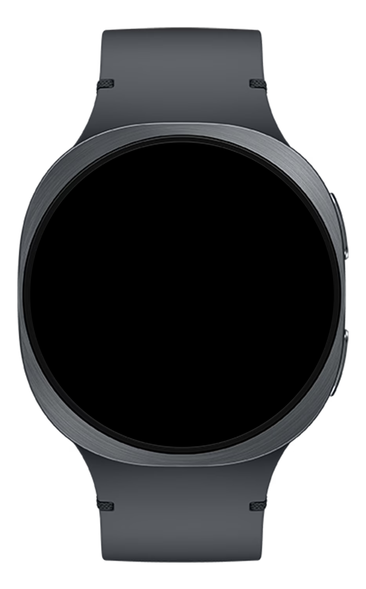

Not on Samsung? The grammar isn't Samsung-exclusive. Apple Handoff, Google Cast, and Microsoft Continuum face the same routing problem — Samsung just ships the most cross-surface stack today. Names changed for privacy. Real couple, real flat, real Tuesday.
{cognitive_load, social_exposure, form_factor}. Each surface receives the right shape: a glance, a whisper, depth, an announcement, a post-it.Samsung Galaxy in 2026 is real. Calendar, notifications, music, health — all of it crosses devices without friction. That part is solved.
The part that isn't: every surface starts from zero. The Watch has no idea Ines just woke up. The TV has no idea Mateo's in the room. Three days this week, her surfaces did the wrong thing — politely, perfectly, at the worst possible moment.
Concept · Surface roster Five surfaces Ines uses before she leaves the house. Each has a native vocabulary — set by the hardware, not the software. Today's OS treats them as copies of the same screen.
Before showing the gap, it's only fair to say how far Galaxy has come. The Galaxy S26 ecosystem ships with four genuinely impressive cross-surface capabilities.
Galaxy AI reads your context and routes notifications to the best available device. Using your Watch? It vibrates first. At your desk? The phone lights up.
EarBuds jump between Phone, Tab, and PC automatically as you move your attention. No tapping. No settings. The audio follows you.
Watch biometrics feed Phone and Tab in real time. AI cross-analyzes sleep, stress, and calendar density to recommend better scheduling.
At MWC 2026 Samsung announced an agent layer that connects Watch, EarBuds, Phone, TV, and smart-home appliances as a single AI persona.
Samsung routes notifications. Samsung switches audio. Samsung reads biometrics. What Samsung doesn't yet have is a shared design language — a grammar that tells every surface how to shape information for its native vocabulary. That's what three days in Ines's life exposed.
Of the 8 Context Tokens, three explain almost everything this framework does. Cognitive Load — how loud to be. Social Exposure — what's safe to show. Form Factor — how to shape it.
Each Token is a live read of the room, held in the Context Brain · Level 3 — Now Layer and refreshed every few seconds. Cross-Surface Grammar is the rule layer that reads those three signals and decides, per surface, what arrives and in what shape.
Cross-Surface Grammar is a proposed design-language layer — a grammar Takao is proposing as a community standard, analogous to how Matter standardized smart-home device communication. Samsung, Apple, Google, and Microsoft each have pieces of this today. The proposal is the unified language above their implementations.
Concept · Three Tokens Three of the eight Context Tokens, accent-coded across the rest of this case study. The other five Tokens (Physical State, Priority Weight, Feasibility, Autonomy Dial, Disclosure Dial) are referenced but not load-bearing for surface routing.
Every Token has a name, a type, a domain, a refresh rate, and a schema version. The same JSON object lands on Watch firmware, Phone OS, TV system process, and Kitchen Display — without translation.
{
"token": "cognitive_load",
"version": "2.0",
"type": "float",
"domain": [0.0, 1.0],
"estimator": "time × calendar × activity",
"refresh_ms": 4000,
"consumers": [
"watch","buds","phone",
"tv","kitchen_display"
]
}
Backstage · Token Schema Same shape for all three Tokens. Versioned with a deprecation contract — a 2025 surface running v1.0 still receives projections from a 2027 Brain.
Each surface declares which Tokens it reads and which it writes. Permissions enforced at the API layer — not at the copy layer.
// surface registers its access to live Token state brain.subscribe({ surface: "watch", read: ["cognitive_load", "form_factor", "priority_weight"], write: ["physical_state"], refresh: "on_change" });
Backstage · Brain API "Watch only sees three Tokens" isn't an opinion in copy — it's enforced at the API layer. Phone is the only surface with full read/write because Phone is where the user explicitly declares preferences.
Token state goes in. A rule fires. A surface-specific UI command comes out. Every surface runs the same engine — only the renderer differs.
{
cognitive_load: 0.18,
social_exposure: "alone",
form_factor: "watch",
time: "07:00",
priority_weight: 0.84
}
match Watch + just-woke: surface_count: 3 format: "haiku" haptic: "single" defer 20 items: to: "phone" when: "cl > 0.4"
watch.render({
layout: "three-line",
items: [...top3],
haptic: "single",
defer_count: 20
})
Backstage · Rule Engine Same engine runs on every surface. The renderer that follows is what differs — Watch draws three lines; EarBuds composes a 14-second voice clip; TV redacts the work-email sender entirely.
Patterns aren't a flat catalog. They compose. The 21:14 evening scene is built from three of them — each named, each canonical, each described in CONTEXT_GRAMMAR_TERMS.md.
Ines and Mateo are on the sofa. Ines ordered a Tag Heuer watch as a birthday gift for Mateo. The shipping confirmation arrives on her phone. Mateo is 40 cm away, reading.
Mateo does not see "Tag Heuer — your order ships tomorrow 09:00." The surprise survives Friday.
Backstage · Composition The patterns library is a vocabulary, not a Pinterest board. Same patterns, recombined, become the Watch morning briefing in the next chapter.
Mateo's Phone is an iPhone. The Brain has to read his proximity without owning his device. Cross-Surface Grammar is a layer above vendors — like Matter for smart-home, OAuth for auth, Passkeys for credentials. Proposal — does not currently ship.
Backstage · Federation Matter took five years from announcement to ship. A federation contract for Context Tokens would follow a similar arc. The case study isn't claiming it exists — it's claiming the design works only if it does.
Every Cross-Surface Grammar decision is traceable. The reader can ask why this and the Brain answers — Token by Token, rule by rule.
Mateo's phone was detected in the same room. That single fact — someone who shouldn't see this is nearby — changed what Ines's lock screen showed. The grammar read the room, made a judgment call, and protected a moment of kindness without Ines having to configure anything. That's not a feature. That's hospitality encoded as an algorithm.
Backstage · Telemetry The trace is the difference between "the AI decided" and "the AI decided this, for these reasons." Without it, Cross-Surface Grammar reads as magic. Magic doesn't ship at Samsung.
Ines opens her eyes. The Watch shows three items — the only ones that matter at 07:04 on a Tuesday.
The other twenty notifications are deferred to the phone, queued for when her Cognitive Load rises above the just-woke threshold.
The time is prominent. The wrist is still a wrist. The grammar made this decision in 2.1 ms — before she raised her arm.

User UI · Galaxy Watch 07:04. Cognitive Load = 0.18 (just-woke). Three items surface. Twenty deferred. Time occupies its rightful place.
Ines is on the S-train to Nørreport. EarBuds in, music playing. Her PM posts a long Slack message about the Q1 deck.
Cross-Surface Grammar intercepts it. The Watch stays quiet. The phone stays in her pocket. Fourteen seconds of TTS fires between tracks — the gist, nothing more. Music resumes.
Concept · EarBuds routing Form Factor = EarBuds-in + moving. Cognitive Load = moderate. The grammar routes to voice, compresses to the essentials, and fires in the gap between songs.
21:14. Sofa. Mateo reading beside her, 40 cm away.
A shipping email arrives on Ines's phone. She ordered a Tag Heuer watch as a birthday gift for Mateo. The phone is face-up on the coffee table.
The lock screen shows: "1 new email · tap to view"
Social Exposure read the room. Mateo's iPhone was 1.8 m away via UWB. The grammar matched the email against the wishlist gift class and collapsed the preview before the screen lit up. Mateo never sees "Tag Heuer."
User UI · Galaxy S25 21:14. Social Exposure = partner-nearby. Preview Redaction fired. The Tag Heuer name never surfaces. The birthday survives.
A Watch speaks in haiku. EarBuds whisper. A TV announces. A Kitchen Display is a sticky note for hands that are full. A Phone is a private office.
These aren't style choices. They're hardware constraints, signed by physics. Any design language that wants to live on all five surfaces has to speak five mother tongues — fluently.
Concept · Surface Vocabulary Five form factors, five expression grammars. Depth, privacy, and interaction shape vary by hardware — the design language is built on top of these constraints, not against them.
Fifteen signature cells. Each one a rule:
Social Exposure = partner-nearby + Surface = TV → work notifications hidden entirely Cognitive Load = deep-focus + Surface = Watch → highest-priority only · haptic Form Factor = EarBuds-primary + moving → short text read aloud · never displayed
Not a preferences panel. Not a setting the user has to find. A design language the OS speaks before the user has to ask.
Concept · Cross-Surface Grammar Rules The design artifact at the center of Project 05. Rows are Token states; columns are surfaces; each cell is a rule that turns context into the right shape on the right device.
Twenty-three still waiting. The wrist shows three.
Cognitive Load reads just woke up. Form Factor reads Watch = glance. Moment Composer picks the three that matter and sends the other twenty to the Phone, where they'll meet her after coffee.
Pattern · Moment Composer
inputs : Cognitive Load · Form Factor ·
Priority Weight · Time-of-day
surface: Watch
output : 3 highest-priority items, one line each
defer : 20 items → Phone, surfaced when CL > 0.4
User UI · Galaxy Watch 07:04. Cognitive Load (just woke) × Form Factor (Watch = glance) → 3 lines shown, 22 deferred to Phone.
Same Slack message. Same PM. This time Form Factor reads EarBuds primary · moving · hands full. The text is never rendered. Moment Composer turns it into fourteen seconds of voice and slips it between two songs.
The Watch gives one haptic pulse — summary delivered. The Phone stays in her coat pocket. That is what EarBuds were built to make possible. Today's OS just hasn't asked them to.
Concept · Galaxy Buds 3 Pro EarBuds have no display — this is a Concept mock of the audio playback state. The message is never rendered as text; it slips in as 14 seconds of voice between two songs.
Same Tag Heuer email. Same couch. The Phone still lights up. The lock-screen preview now reads "1 new email · tap to view". No sender. No subject. No product name.
Social Exposure detected Mateo's iPhone within two meters of Ines's. The Rule Engine cross-checked the email against her wishlist. Verdict: gift-class. Preview Redaction fires. The lock screen collapses to one line. When Ines picks up the phone, the full message is right there, waiting only for her eyes.
Focus Mode filters by app. Grammar reads the room. No category list to maintain. No "do not disturb" to remember to turn on. The decision happens at the speed of the room changing.
User UI · Galaxy S25 21:14. Mateo's iPhone <2 m via UWB. Social Exposure fires. Preview collapses to "1 new email · tap to view." The Tag Heuer name never surfaces.
A doctor on a busy ward shift uses five surfaces too. Wrist for vitals. Earpiece for intercom. Tablet for charts. Ward monitor for triage. Nurse-station screen for handoffs. Cognitive Load. Social Exposure. Form Factor. The same three Tokens. Higher stakes.
In a Code Blue, the wrist collapses to one line: Bay 4 · 22-yr-old · v-fib · 2 mins. The intercom whispers the patient's allergies. The ward monitor blanks the family-visible display so a stranger doesn't read a prognosis over the doctor's shoulder. Same engine. Different stakes. Lives, not surprises.
Concept · Generalization Same three Tokens. Different domain. The proof isn't that Cross-Surface Grammar works at home — it's that the design language scales to a hospital without changing its primitives. Domain doesn't matter. The proof matters.
Project the framework four years out. Galaxy AR Glasses 2030 — sixth surface, or replacement for Phone? Either way, the grammar reads the same three Tokens. Aspirational — does not currently ship.
Ines blinks twice. The HUD overlays a one-line briefing in her peripheral vision — three meetings, one decision, one deferred message. Her gaze meets Mateo's. The HUD blanks itself — Social Exposure detected an intimate look. The grammar didn't need to be retrained. It only needed to learn what "looking at someone you love" reads as.
Concept · Future Form Factor Cross-Surface Grammar wasn't designed for screens. It was designed for the room. AR is just another surface in the room — same Cognitive Load, same Social Exposure, same Form Factor. The framework was forward-compatible by accident, then by design.
indicative · simulated cohort · n=120 · April 2026
Methodology Numbers from a simulated 120-person cohort using the v2 routing layer over a 14-day rollout window, baselined against 2026 default Galaxy behavior. Indicative, not from a real deployment.
Senior portfolios show reasoning, not just output. Six load-bearing decisions made during Project 05 — three kept, three cut — with the why behind each.
Process · Decisions Kept/Cut The verdict isn't a polish note. It's a record of where the framework refused convenience. Each cut row is a thing the v0 demo could have done; each kept row is a guardrail the team chose to honor.
Composite voices from research interviews. The shape of the need, not the specific n. Warm, forward-facing — never self-defensive.
"I bought my Watch so I could put the phone away. I keep pulling the phone out anyway."
"I just wanted my partner not to see his birthday gift on my lock screen."
"My wrist buzzes for everything. By the time I'm awake enough to tell what mattered, the bus is already here."
"When I'm cooking, I want the recipe. Not the work email about the recipe."
Methodology: composite voices from simulated-archetype interviews informed by published HCI research on multi-device household behavior. Quotes are not direct attributions. The point of this section is the shape of the need, not the specific n.
Trustworthy designers name their own edges. Cross-Surface Grammar shipped with these gaps still open.
Three principles that survive removing Cross-Surface Grammar from the picture. Useful even if Project 05 never ships.
Watch, EarBuds, Phone, TV, Kitchen Display each have a hardware-determined native vocabulary. Designing one app and "responsive-ing" it across surfaces breaks the hardware's intent. Honor the vocabulary; build the design language on top of it.
Focus Mode, Do Not Disturb, and notification filters all work by app or by category. They miss the fundamental signal: who can see this. A privacy primitive that reads the room — not the app catalog — is the one that survives a partner sitting on the couch.
Once the data is everywhere — and in 2026 it is — the next-order problem is which surface should speak. That decision belongs at the OS, not in each app. The routing layer is where attention is preserved; an app-level filter can never reach it in time.
7 AM to 10 PM. Five surfaces. One Brain deciding, minute by minute, which one should speak and which should stay quiet.
The pattern isn't "all surfaces always on." It's a relay — the right surface, the right depth, the right moment.
Concept · Day timeline Five tracks, fifteen hours. Every block is the Cross-Surface Grammar choosing this surface over the other four for this moment. The gaps are the point.
One Brain.
Five surfaces.
Each speaks its dialect.
Project 05 thesis · Cross-Surface Grammar
Three Tokens. Fifteen rules. One routing layer above the apps. Enough structure for five surfaces to stop shouting and start behaving like one good listener.
P1 designed what the Brain remembers at home. P2 designed what it carries on a trip. P5 designs how it speaks, on the wrist, in the ear, on the wall, on the phone, on the kitchen counter.